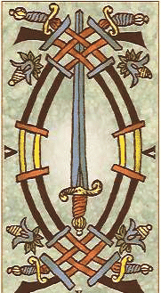

THE FOURTH, THE CENTER THE HEART CHAKRA (ANAHATA)
LOCATION: Center of the chest
ELEMENT: Fire/Air
COLOR: Green
NUMBER OF PETALS: 12
PLANET: Mercury
Gender: Neuter
DAY: Wednesday
METAL: Mercury
FUNCTION: The heart chakra is the neuter connector for the upper and lower chakras
INNER STATE: Levity, astral projection
BREATHING TECHNIQUE: Alternate Nostril [Sun/Moon] Breathing [Anuloma Viloma]
VIBRATION [Choose from one of the following]:
- NEBO [Necronomicon] This vibration can be used by both new and experienced meditators
"N-N-N-NAY-AY-AY-B-B-B-B-OH-OH-OH" - YAM or YANG [traditional chant] This vibration can be used by both new and experienced meditators.
"Y-Y-AH-AH-AH-M-M-M-M" or "Y-Y-AH-AH-AH-N-N-G-G" - GEBO [Runic] This vibration is intermediate to advanced, but can be used by both new and experienced meditators.
"G-G-G-G-AY-AY-AY-B-B-B-B-OH-OH-OH-OH" - YAUM
[Sanskrit] This vibration is advanced and exceptionally powerful, and should only be used by experienced meditators.
"Y-Y-Y-AH-AH-AH-U-U-U-U-M-M-M-M"
Note* ALWAYS KEEP THE SAME CATEGORY IN REGARDS TO YOUR WORD OF POWER, IF YOU ARE PERFORMING THE FULL CHAKRA MEDITATION; FOR EXAMPLE, IF YOU ARE USING THE RUNIC VIBRATION, STAY WITH THIS AND USE THE RUNIC VIBRATIONS FOR THE OTHER CHAKRAS.

THE MEDITATION:
This meditation is best performed on Wednesdays during the hours of the Mercury, but if you are doing the full meditation; working on all of your chakras, then any time is fine.
1. Visualize your heart chakra as a YONI:

2. Perform the Alternate Nostril [Sun/Moon] Breathing [Anuloma Viloma] [click here]
3. Breathe in, focus upon, and feel your heart chakra and on the exhale, vibrate your selected word of power several times.
4. Remain still, focusing upon and feeling your heart chakra for several minutes.
BACK TO THE FULL CHAKRA MEDITATION PAGE
BACK TO SATANIC POWER MEDITATION MAIN PAGE
© Copyright 2007, 2013, Joy of Satan Ministries;
Library of Congress Number: 12-16457